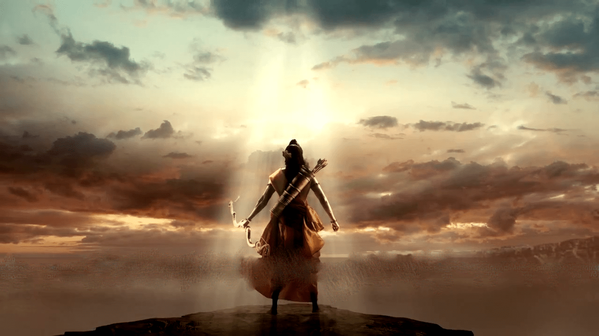

Kashyapa Aditi
Surya Vivasvat
Vaivasvata Manu
Ikshvaku
Vikuksi Sasada
kakutstha
Suryodhana Anena
Prithu
Visvaga Asva
Indu Asva
Juvanasva I
Sravasta
Brihadasva
Kuvalasva Dhundhumara
Danda
Dridhasva
Kapilasva
Pramaoda
Haryasva
Nikumbha
Samhatasva
Akritasva Krisasva
Ranasva
Muchukunda
Purukutsa
Dharmasena
Satrojit
Vasuda Trasadasyu
Samshruti
Tridhanavan
Trayyaruna
Satyavrata
Satyavratha Trisanku
Harishchandra
Rohita
Vrika
Bahu
Sagara
Asamanjas
Anshuman
Dilipa I
Nabhaga
Ambarisa
Sindhudvipa
Ayutayus
Rituparna
Kalmasapada
Sarvakarman
Anaranya
Nighna

Understanding the Ramayana, an ancient epic written by the sage Valmiki, can indeed provide profound guidance and solace during difficult times. The Ramayana holds immense importance in Hindu culture and spirituality, serving as a timeless source of wisdom, inspiration, and moral teachings.
The epic narrates the divine journey of Lord Rama, highlighting the values of righteousness, devotion, and resilience. Rama's unwavering commitment to his duty, even amidst immense challenges and personal sacrifices, serves as a guiding light for seekers of truth and righteousness.
Moreover, delving into the lineage of the Suryavamsha dynasty, as described in sources like Bhart Gyan on Facebook, offers insights into the rich historical and mythological background of the Ramayana. Understanding the lineage of Lord Rama and his ancestors, including Surya Vivasvat, enhances our appreciation of the epic's narrative and its significance in Hindu mythology.
As you seek solace and divine guidance in challenging times, exploring the Ramayana and its teachings can deepen your spiritual connection and provide profound insights into navigating life's trials with courage, faith, and perseverance. The timeless wisdom and moral lessons found in the Ramayana continue to inspire millions worldwide, making it a cherished and revered epic for generations to come.